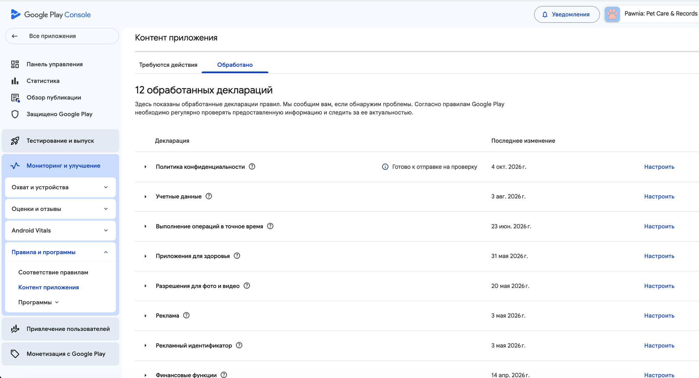

2.3 Контент приложения — обзор деклараций
Это главная страница всех «деклараций»: политика конфиденциальности, безопасность данных, реклама, рекламный идентификатор, финансовые функции и ещё несколько пунктов, которые применяются не ко всем приложениям. Отсюда видно сразу всё, что требует внимания.
Открой «Контент приложения»
Путь из шага 2.1: Мониторинг и улучшение → Правила и программы → Контент приложения. Два таба — «Требуются действия» (что-то не заполнено или нужно обновить) и «Обработано» (уже отправлено и принято).

Вкладка «Обработано»
Список деклараций, которые уже заполнены и приняты. Если декларация ещё не заполнена вообще — она будет во вкладке «Требуются действия» слева от этой.
Политика конфиденциальности
Ссылка на публичную страницу политики — та же, что мы указывали в App Privacy у Apple. «Готово к отправке на проверку» означает: изменена, но ещё не отправлена (см. шаг 2.6).
Реклама
Содержит ли приложение рекламу — отдельная декларация от Data Safety. Разберём на шаге 2.5.
Рекламный идентификатор
Отдельная декларация именно про AD_ID permission (Android 13+) — не путать с «Рекламой» выше. Нужна, даже если приложение не показывает рекламу, но использует рекламный ID для измерения (как Pawnia с Meta SDK).
Рекламный идентификатор →